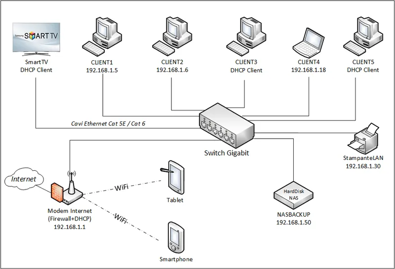

Cos'è una L.A.N.?
Una LAN (Local Area Network) è una rete informatica che collega dispositivi (computer, stampanti, smart TV, ecc.) in un'area geografica limitata come una casa, un ufficio o un singolo edificio.
Caratteristiche Principali
A differenza delle WAN (Wide Area Network), la LAN ha caratteristiche specifiche:
- 🏠 Privata: È gestita dal proprietario (tu a casa, o l'azienda in ufficio).
- 🚀 Alta Velocità: Permette il trasferimento dati molto rapido tra i dispositivi interni.
- 🤝 Condivisione Risorse: Permette di condividere file, stampanti e scanner istantaneamente.
- 🔌 Tecnologie: Utilizza principalmente cavi Ethernet e connessioni Wi-Fi.

Esempio di topologia LAN domestica
📐 Ma come sono disposti i cavi?
Non tutte le reti hanno la stessa forma. Clicca sull'immagine qui sotto per scoprire le Topologie di Rete.

Clicca qui per approfondire le forme della rete ➡️